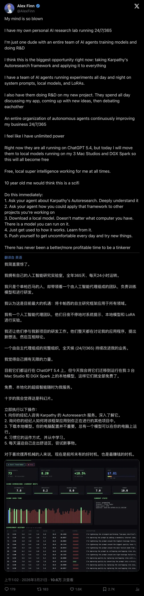
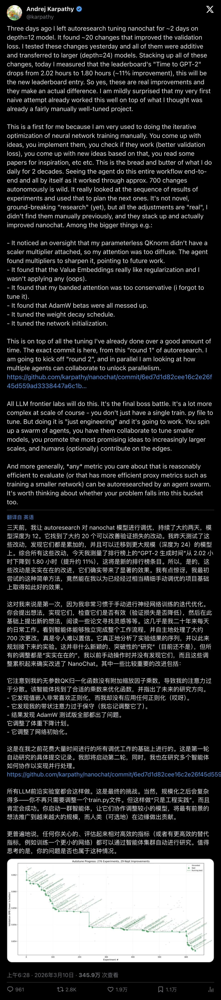
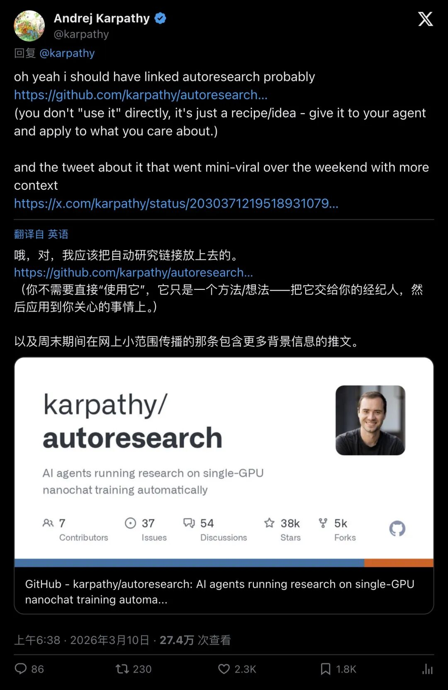
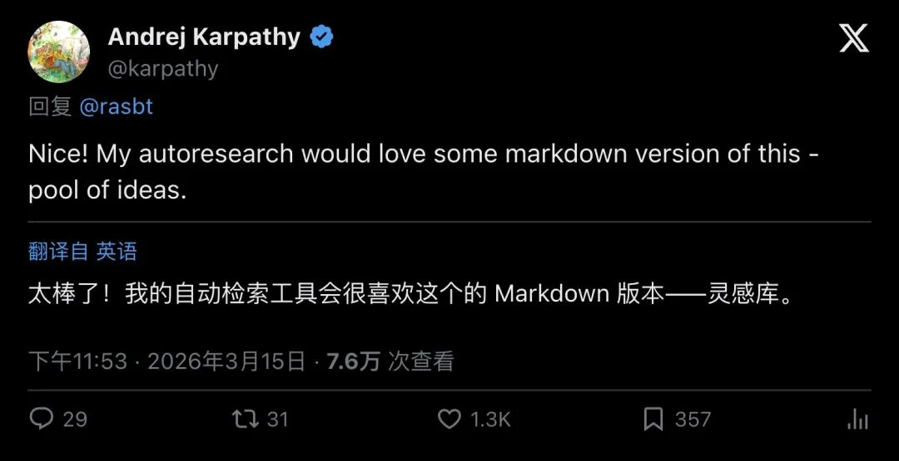
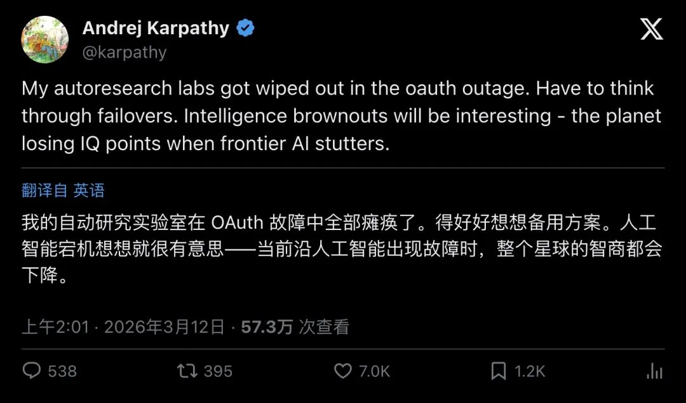
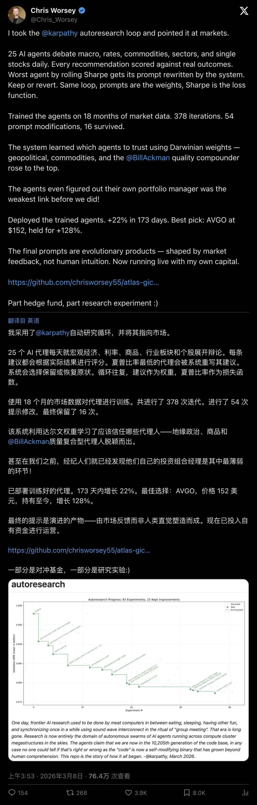

Karpathy 开源「AutoResearch」太狠了：一个人真能跑起 24/7 AI 研究实验室？！
一个小仓库，600 多行代码，却把“研究”拆成了可自动化的循环：AI 代理自己提假设、改代码、跑 5 分钟训练、看指标、保留或回滚，然后继续。Karpathy 说他让 agent 两天跑了约 700 次变更，把Time to GPT‑2 从 2.02h 拉到 1.80h（约 11%），还放话这是所有前沿实验室的“最终 Boss 战”。这到底是研究革命，还是更高级的“调参”？更关键的是：普通人怎么把它搬进自己的工作流？
“我有了自己的 24/7 研究实验室”——这句疯话突然开始变真
如果你最近刷到一类夸张到离谱的宣言，大概率是这个意思：
“I have my own personal AI research lab running 24/7/365.”
你第一反应一定是：又在贩卖焦虑。
但这次，焦虑背后有硬东西。

▲ Alex Finn 的爆款感叹：一个人+一堆 agent，研究能“全天候运转”
这条推文之所以能引爆传播，不在情绪，而在它指向一个结构性的变化：
人类从“亲手跑实验的人”，变成“设计研究流水线的人”。
你以为这是科幻？Karpathy 已经把“研究流水线”的最小原型扔出来了。
Karpathy 把“科学方法”写成了一个循环：改、跑、评、留、回滚
AutoResearch 的核心，简单到令人不安：
1. 让 agent 只改一小块代码（例如 `train.py`） 2. 每次实验固定预算（例如训练 5 分钟） 3. 用一个清晰指标自动判赢（例如val_bpb，越低越好） 4. 指标变好：保留改动；变差：回滚 5. 重复，直到你睡醒
Karpathy 在 README 里把它写得像一个“配方”，不是一个成品工具：
“The idea: give an AI agent a small but real LLM training setup and let it experiment autonomously overnight. It modifies the code, trains for 5 minutes, checks if the result improved, keeps or discards, and repeats.”
「核心想法：给 AI agent 一个小但真实的训练环境，让它整晚自主实验：改代码、训练 5 分钟、看指标、保留或丢弃，再重复。」
他甚至把吞吐量写得很直白：每小时大概 12 次实验，睡一觉就能跑上百次。你看到的“24/7”，其实是工程学。
你以为这只是口号？Karpathy 给出了一个很难忽略的战报。

▲ Karpathy 主贴：约 700 次自主变更，叠加改动后 Time to GPT‑2 约提升 11%
他写得很“人话”，也很“狠话”——
“Seeing the agent do this entire workflow end-to-end … as it worked through approx. 700 changes autonomously is wild.”
「看着 agent 端到端把整个流程自己跑完，并且自主做了大约 700 次变更，真的离谱。」
以及更炸的那句：
“All LLM frontier labs will do this. It's the final boss battle.”
「所有前沿大模型实验室最终都会这么干，这就是最终 Boss 战。」
问题来了：为什么一个“极小 repo”，能被他说成“最终 Boss 战”？
关键在 program.md：你是在“写研究组织”，不再是写 Python
很多人误解 AutoResearch，是因为他们以为它是另一个工具链。
Karpathy 的定位更尖：你不需要“亲自使用它”，你需要把它交给 agent。它是方法/配方。

▲ Karpathy：你不会直接“使用”它，它更像一份 recipe/idea
他那句定义很干脆：
“you don't "use it" directly, it's just a recipe/idea - give it to your agent and apply to what you care about.”
「你并不会直接‘使用’它，它更像一个配方/想法：把它交给你的 agent，然后用到你真正关心的指标上。」
这句话背后，是研究分工的倒置：
以前：你盯着代码，agent 帮你写几行 现在：你盯着指标、约束、预算、回滚机制，agent 负责把实验跑到吐
换句话说：你写的不是 Python；你在写一间“自动研究实验室”的规章制度。
这也是为什么 Karpathy 会在另一个回复里说：他的 autoresearch 需要“吃”markdown 版的想法库。

▲ Karpathy：给 autoresearch 喂一份 markdown 的“灵感池/想法库”
当“想法”变成 markdown 文档，当“实验”变成自动循环——研究的成本结构就会变。
但成本变低，不等于风险消失。甚至相反，风险会更隐蔽。
现实当头一棒：一次 OAuth 故障就能把“实验室”清空
当你的研究循环开始 24/7 运转，你最怕的是什么？
GPU 够不够反而是次要的。
真正致命的是：状态和记忆丢了。

▲ Karpathy：OAuth 故障导致 labs 被清空，必须考虑 failover
他写得很轻描淡写，但杀伤力很大：
“My autoresearch labs got wiped out in the oauth outage. Have to think through failovers.”
「我的自动研究实验室在 OAuth 故障里被清空了，得认真考虑容灾。」
这提醒了一个很多人忽略的问题：
当研究变成自动化系统，你要先做 SRE，再做科学家。
日志、回滚、实验追踪、失败恢复、持久化……缺一块，你的“24/7”会变成“24/7 烧电”。
“这看起来像调参”——社区质疑最狠的一刀，Karpathy 怎么接？
AutoResearch 爆红后，HN 的质疑集中在一个点：
你跑几百次实验，改来改去还像是在调学习率、weight decay、beta……这和超参搜索差多远？
Karpathy 在 Hacker News 里给了一个很清晰的回应框架（节选）：
“this is very far from hyperparameter tuning in at least three important ways:
- it can modify code arbitrarily, the notion of a "hyperparameter" dissolves
- there is no need to run "sweeps" … because LLM agents are sequential…
- it's fully automatic, it doesn't require human in the loop to mess with the code.”
「这和超参调优差得很远，至少有三点：
它可以任意改代码，‘超参’这个概念会被稀释掉 不需要传统 sweep，因为 agent 是序列式搜索，能根据结果调整策略 全自动，不需要人类在环里不停手动改/手动跑」
你会发现争论的真正焦点不在“有没有提升”，而在：
研究的边界到底在哪里？当 agent 能写任意代码、能读结果、能持续迭代时，“研究”会被重新定义。
只是，定义被改写的同时，Goodhart 的幽灵也会出现：
跑太多次，验证集会不会被“污染”？ 指标会不会被优化到失真？ 你怎么确定改动在更大规模也成立？
这些问题，才是下一轮真正的战场。
更离谱的迁移：把同一套 loop 指向市场，Sharpe 变成“val_bpb”
如果你还觉得 AutoResearch 只属于训练圈，那这条推文会让你坐直。
有人把 Karpathy 的 loop 直接“对准市场”：让一群 agent 给策略打分，用真实结果评估，然后 keep 或 revert。

▲ Chris Worsey：把 loop 指向 markets，Sharpe 作为评价函数，保留或回滚
这才是 AutoResearch 最危险、也最有想象力的一面：
只要你能把目标压缩成一个可自动评估的指标，你就能把研究循环搬过去。
训练、交易、营销、产品迭代、安全攻防……门槛从“会不会写模型”变成“能不能定义指标 + 约束”。
你以为这就完了？还没有。
真正的“一个人 24/7 实验室”要怎么搭：五个组件，一条底线
如果你想把 Karpathy 的方法搬进自己的工作里，别急着找“同款工具”。先把组件想清楚：
1)最小可运行闭环：一次实验能跑完、能产出指标 2)指标（Metric）：脚本能读，波动别太大，尽量贴近真实目标 3)预算（Budget）：时间/金钱/token/并行度，必须有刹车 4)差分与回滚（Diff & Revert）：改动可审计，失败能回滚 5)日志与记忆（Logging & Memory）：改了啥、指标多少、为什么失败，都要可追溯
这五个组件到位，你就拥有了“研究的发动机”。
但还有一条底线：
别让指标变成唯一的真理。
AutoResearch 的威力，来自“循环可持续”。它的风险，同样来自“循环可持续”。当它开始 24/7 优化一个数字，你必须随时准备问一句：
这个数字，真代表你想要的世界吗？
— END —